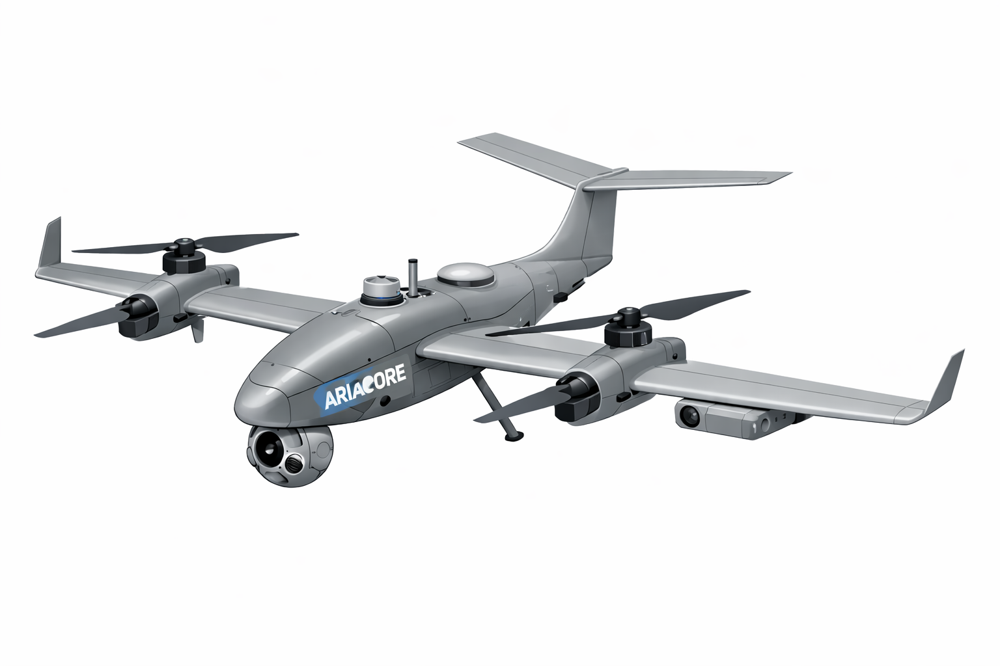
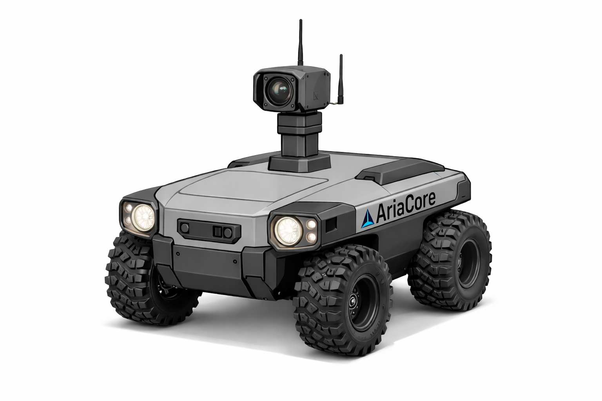

AriaCore builds environmentally responsible infrastructure and automation systems that reduce human risk, lower emissions, and extend services to places traditional technology can’t reach. We don’t build robots for spectacle. We deploy systems that work, last, and make a measurable difference.
Real-world automation only works when it’s safe, connected, and accountable. That’s why AriaCore starts with infrastructure—rural wireless connectivity that enables secure remote operation, monitoring, and maintenance of autonomous systems—before deploying robotics into the field. This approach: - Reduces travel and fuel use - Enables remote supervision and diagnostics - Lowers labor risk and cost - Supports long-duration, low-impact deployments Connectivity is not an add-on. It’s the foundation.
AriaOS is the distributed intelligence layer that powers all AriaCore systems. It is a resilient, multi-node operating framework designed for real-world robotics, environmental monitoring, and long-duration autonomous operations.
AriaOS enables secure coordination between ground rovers, aerial systems, environmental platforms, and infrastructure nodes—allowing systems to operate safely, remotely, and under human oversight through AriaCore’s wireless network.
AriaCore deploys wireless broadband infrastructure in underserved and rural areas, enabling reliable connectivity where it’s needed most. Our network: -Supports environmental monitoring and automation -Enables remote operation of deployed robotic systems -Reduces the need for on-site travel and staffing This infrastructure powers everything we do.
Using our wireless backbone, AriaCore deploys autonomous and semi-autonomous systems for environmental monitoring, inspection, and site services. All systems operate under: - Human-in-the-loop approval - Conservative safety constraints - Continuous monitoring and logging Automation is used to extend human capability, not replace accountability.

Long-range and inspection-focused aerial platforms for surveying, monitoring, and data collection in challenging environments. Our autonomous VTOL platforms deploy seeds, survey terrain, map ecosystems, and restore wildfire-damaged landscapes. Heavy-lift and high-resolution survey variants work together under AriaOS to achieve rapid, scalable reforestation. A percentage of proceeds from all services is reinvested directly into AriaCore’s environmental recovery programs.
Explore Enterprise Class
Autonomous systems designed to support land restoration, reforestation, and environmental recovery efforts. SeedSphere and AquaSphere modules roll across terrain, aerating soil, distributing thousands of native seeds, and strengthening the foundation of new forests. Deployed and collected autonomously, they accelerate ecosystem recovery. All system sales and services contribute to advancing AriaCore’s reforestation mission.
Explore SeedSphere Systems
AEGIS is a rugged, ground-based rover designed for security patrol, site monitoring, and environmental inspection in remote or high-risk areas. Key capabilities: - Autonomous and supervised patrols - Remote monitoring via AriaCore’s wireless network - Evidence-grade recording and reporting - Reduced need for overnight staffing and vehicle trips
Explore Series Robots
Automation With Accountability Every AriaCore system is designed with: - Human authorization before motion - Conservative operating limits - Fail-safe behavior - Transparent logging and monitoring We believe environmental technology must be trusted, understandable, and safe—for people, property, and ecosystems.
From rural connectivity to autonomous environmental systems, AriaCore is building practical technology that solves real problems—without cutting corners. Your support helps us rebuild forests, restore ecosystems, and develop technologies that protect Earth for generations.
Support AriaCore